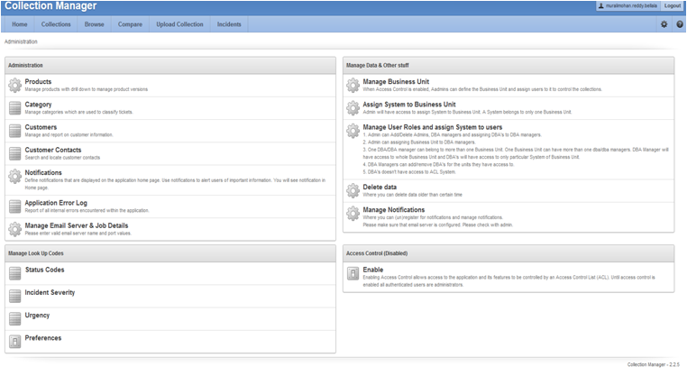
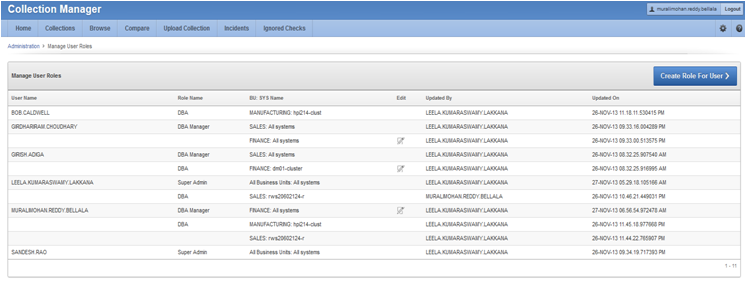
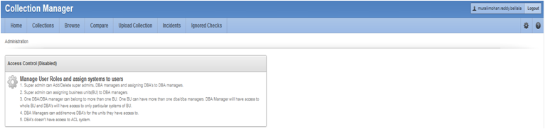
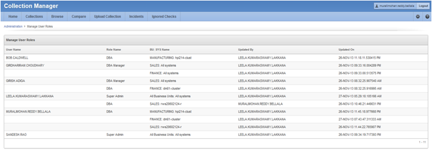
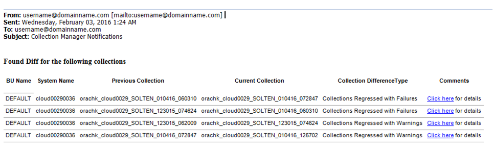
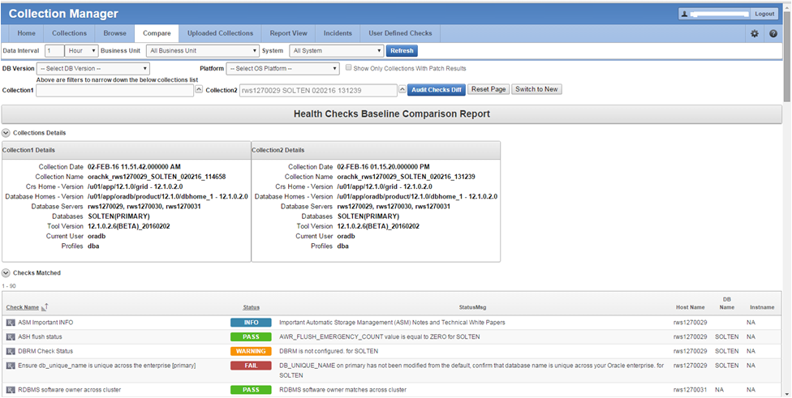
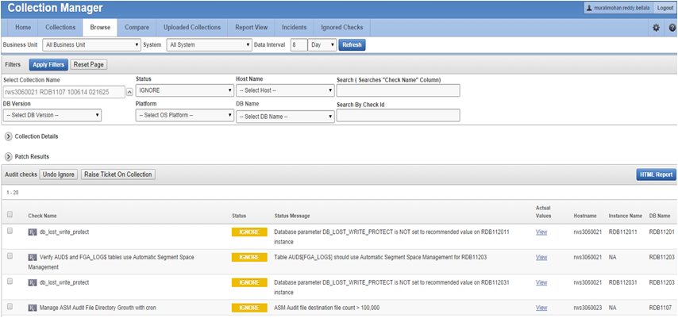
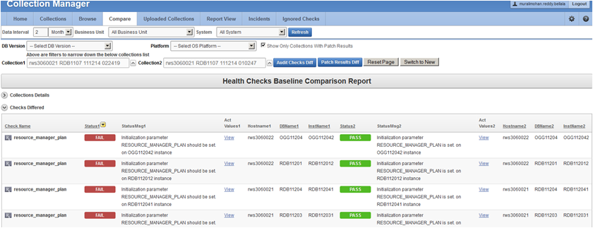
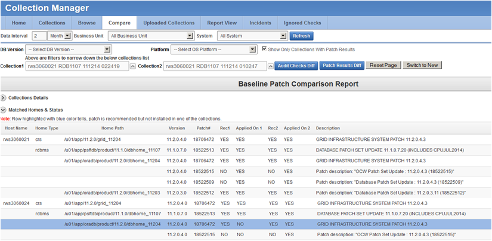

1.10 Oracle Health Check Collections Manager for Oracle Application Express 4.2
Oracle Health Check Collections Manager for Oracle Application Express 4.2 provides you an enterprise-wide view of your health check collection data.
- Installation
Follow the installation procedures sequentially to install Oracle Health Check Collections Manager. - Upgrading Oracle Health Check Collections Manager Application
Oracle ORAchk or Oracle EXAchk automatically upgrades new versions of the Oracle Health Check Collections Manager. - Getting Started
Familiarize yourself with the Oracle Health Check Collections Manager Application. - Oracle Health Check Collections Manager Application Features
Familiarize yourself with the features of Oracle Health Check Collections Manager Application. - Uploading Collections Automatically
Configure Oracle ORAchk and Oracle EXAchk to automatically upload check results to the Oracle Health Check Collections Manager database. - Viewing and Reattempting Failed Uploads
Use these procedures to view and reattempt to upload the failed uploads. - Oracle Health Check Collections Manager Application Uninstallation
Anytime you can decommission Oracle Health Check Collections Manager Application setup. Follow these steps sequentially to uninstall the application leaving no residual files. - Troubleshooting Oracle Health Check Collections Manager
This topic describes how to troubleshoot Oracle Health Check Collections Manager.
1.10.1 Installation
Follow the installation procedures sequentially to install Oracle Health Check Collections Manager.
Note:
Upgrade Oracle Health Check Collections Manager directly from the Oracle ORAchk or Oracle EXAchk tool.
- Configuring Oracle Application Express and Creating a Workspace
To configure Oracle Application Express and create a workspace, follow these procedures. - Install Oracle Health Check Collections Manager Application
To install Oracle Health Check Collections Manager, follow these procedures. - Log in to Oracle Health Check Collections Manager Application
To log in to Oracle Health Check Collections Manager, follow these procedures.
Related Topics
1.10.1.1 Configuring Oracle Application Express and Creating a Workspace
To configure Oracle Application Express and create a workspace, follow these procedures.
- Log in to the Workspace
To log in to Application Express admin user workspace, follow these procedures. - Application Express User Accounts
Application Express provides three types of users, namely, workspace administrators, developers, and end users.
Related Topics
Parent topic: Installation
1.10.1.1.1 Log in to the Workspace
To log in to Application Express admin user workspace, follow these procedures.
1.10.1.1.2 Application Express User Accounts
Application Express provides three types of users, namely, workspace administrators, developers, and end users.
Table 1-16 Application Express Types of Users
| Type of User | Description |
|---|---|
|
Workspace administrators |
Workspace administrators can also create and edit user accounts, manage groups, and manage development services. |
|
Developers |
Developers can create and modify applications and database objects. |
|
End users |
End users are non-administrative who have no development privileges and can only access applications that do not use an external authentication scheme. For the Oracle Health Check Collections Manager Application, almost all the users fall into this category. A special role within the Oracle Health Check Collections Manager Application, DBA Managers, and the DBAs manage all application users. |
To grant access to the Oracle Health Check Collections Manager Application for non-administrative users (End users), you must log in to the Workspace as an Admin user.
1.10.1.2 Install Oracle Health Check Collections Manager Application
To install Oracle Health Check Collections Manager, follow these procedures.
Parent topic: Installation
1.10.1.3 Log in to Oracle Health Check Collections Manager Application
To log in to Oracle Health Check Collections Manager, follow these procedures.
Parent topic: Installation
1.10.2 Upgrading Oracle Health Check Collections Manager Application
Oracle ORAchk or Oracle EXAchk automatically upgrades new versions of the Oracle Health Check Collections Manager.
1.10.3 Getting Started
Familiarize yourself with the Oracle Health Check Collections Manager Application.
- Incident Ticket System Lookup Lists and Seed Data
Oracle Health Check Collections Manager Application provides a basic Incident Ticket system. - Access Control System
Limit and control access based on functional roles. - Oracle Health Check Collections Manager Application Administration
To restrict authorized users alone to access the application, grant sufficient privileges to different roles. - Selectively Capturing Users During Login
Configure Oracle Health Check Collections Manager to capture user details and assign the users Oracle Health Check Collections Manager roles. - Configuring Email Notification System
Oracle Health Check Collections Manager provides an email notification system that users can subscribe to. - Bulk Mapping Systems to Business Units
Oracle Health Check Collections Manager provides an XML bulk upload option so that you can quickly map many systems to business units. - Adjusting or Disabling Old Collections Purging
Modify or disable the purge schedule for Oracle Health Check Collections Manager collection data.
1.10.3.1 Incident Ticket System Lookup Lists and Seed Data
Oracle Health Check Collections Manager Application provides a basic Incident Ticket system.
Oracle Health Check Collections Manager Application is deployed with seed data for the lookup lists used for data entry for incident tickets:
-
Products
-
Category
-
Customer Contacts
-
Notifications
-
Status Codes
-
Incident Severity
-
Incident Urgency
The seed data is values that are commonly used. Add or change the seed data provided with the application. However, you must have administrator privileges to manage seed data through the Administration tab.
To access the Administration tab, click the gear icon at the upper-right corner.
Parent topic: Getting Started
1.10.3.2 Access Control System
Limit and control access based on functional roles.
By default, the Access Control system is disabled. If Access Control is disabled, then all authenticated users are granted administrator privileges and can access all application features. To assign one or more roles to the end users, manage access controls through the Administration tab. You can enable the following three functional roles available in the Oracle Health Check Collections Manager.
-
Admin: Admin role user can also be a Workspace Administrator for the application and it depends on your functional roles requirements.
-
DBA Manager
-
DBA
Assign role to the users after configuring the Access Control system.
Parent topic: Getting Started
1.10.3.3 Oracle Health Check Collections Manager Application Administration
To restrict authorized users alone to access the application, grant sufficient privileges to different roles.
Admin
Any end user who is granted an admin role by the workspace administrator has administrator privileges within the Collection Manager application.
http://hostname:port/apex/f?p=ApplicationID
http://hostname:port/pls/apex/f?p=ApplicationID)http://dbserver.domain.com:8080/apex/f?p=103As an admin user, you must see the Administration menu (gear icon) at the upper-right corner. Click this icon to go to the Administration page.
-
Following are the admin user privileges:
-
Add or revoke admin privileges
-
Define Business Units (BU)
-
Assign DBA Manager role to users
-
Assign DBA Managers to one or more BUs
-
Assign systems to BUs (a system can belong to one BU)
-
Assign DBAs to DBA Managers
-
Assign systems to DBAs
-
Ignore any check on a collection, BU, or system
-
Create and assign incidents to any user
-
Manage all incidents
Figure 1-109 Oracle Health Check Collections Manager - Administration

Description of "Figure 1-109 Oracle Health Check Collections Manager - Administration" -
-
Only Admin role can edit any section under the Administration menu.
-
The administrator must configure data based on their requirements under the administration menu to prepare for the wider usage of the application. This is a one-time activity, however, change the configuration over time to suit your needs.
Examples of the configuration data that you need set up are:
-
Products
-
Customers (internal designations for workgroups)
-
Categories
-
Notifications
-
Status codes
-
Manage Email Server and Job details
-
Manage Notifications
-
Incident Severity
-
Urgency
-
Manage User Roles and Assign systems to users
-
Business Units (BUs)
-
Assign systems to BUs
-
DBA Manager
Any user who is granted the DBA Manager role.
http://hostname:port/apex/f?p=ApplicationID
http://hostname:port/pls/apex/f?p=ApplicationID)The DBA Managers must see an Administration menu (gear icon) at the upper-right corner of the application.
Figure 1-110 Oracle Health Check Collections Manager - DBA Manager Administration
Description of "Figure 1-110 Oracle Health Check Collections Manager - DBA Manager Administration"
Click Manage User Roles.
Figure 1-111 Oracle Health Check Collections Manager - DBA Manager - Manage User Roles
Description of "Figure 1-111 Oracle Health Check Collections Manager - DBA Manager - Manage User Roles"
-
Assign DBAs to BUs the manager manages
-
Assign DBAs to one or more systems
-
Ignore any check on a collection, BU, or system
-
Create incidents for any system
-
Assign incidents to DBAs that manage the systems in their BUs
-
Manage any incidents for systems within their assigned BUs
DBA
Any user who is granted the DBA role.
http://hostname:port/apex/f?p=ApplicationID
http://hostname:port/pls/apex/f?p=ApplicationID)The DBA must see the Administration menu (gear icon) at the upper-right corner of the application.
Any end user who is granted administrator role by the workspace administrator has administrator privileges within the Oracle Health Check Collections Manager application.
Figure 1-112 Oracle Health Check Collections Manager - DBA Administration
Description of "Figure 1-112 Oracle Health Check Collections Manager - DBA Administration"
Click Manage User Roles.
DBA has read-only access.
Figure 1-113 Oracle Health Check Collections Manager - DBA - Manage User Roles
Description of "Figure 1-113 Oracle Health Check Collections Manager - DBA - Manage User Roles"
-
Cannot manage Access Control List
-
Manage systems within one or more BUs, if the DBA Managers of those BUs assign them
-
Ignore any check on a collection or system they manage
-
Manage any incidents assigned to them
Parent topic: Getting Started
1.10.3.4 Selectively Capturing Users During Login
Configure Oracle Health Check Collections Manager to capture user details and assign the users Oracle Health Check Collections Manager roles.
Automatically capturing users during login automates user management. You need not create users manually.
-
Captures details of users that are logging in with LDAP authentication
-
Assigns them Oracle Health Check Collections Manager roles, for example, DBA role.
Note:
The Oracle Health Check Collections Manager roles are specific to Oracle Health Check Collections Manager and do not equate to system privileges. For example, the DBA role is not granted SYSDBA system privilege.
However, you can disable automatic capture and re-enable anytime later. If you disable, then you must manually create users and assign them roles.
To enable or disable capturing user details automatically:
Parent topic: Getting Started
1.10.3.5 Configuring Email Notification System
Oracle Health Check Collections Manager provides an email notification system that users can subscribe to.
-
Configuring the email server, port, and the frequency of email notifications.
-
Registering the email address
Note:
Only the users who are assigned Admin role can manage Email Notification Server and Job details.
To configure the email notification system:
- Go back to the Administration page, and click Manage Notifications.
Figure 1-120 Oracle Health Check Collections Manager - Manage Notifications

Description of "Figure 1-120 Oracle Health Check Collections Manager - Manage Notifications"
Note:
Manage Notifications section under the Administration menu is available for all users irrespective of the role.
If the ACL system is enabled, then the registered users receive notifications for the systems that they have access to. If the ACL system is not configured, then all the registered users receive all notifications.
Depending on the selections, you made under Collection Notifications section, you receive an email with Subject: Collection Manager Notifications containing application URL with results.
Figure 1-121 Oracle Health Check Collections Manager - Sample Email Notification
Description of "Figure 1-121 Oracle Health Check Collections Manager - Sample Email Notification"
Under Comments column, click the Click here links for details. Click the respective URLs, authenticate, and then view respective comparison report.
Figure 1-122 Oracle Health Check Collections Manager - Sample Diff Report
Description of "Figure 1-122 Oracle Health Check Collections Manager - Sample Diff Report"
Parent topic: Getting Started
1.10.3.6 Bulk Mapping Systems to Business Units
Oracle Health Check Collections Manager provides an XML bulk upload option so that you can quickly map many systems to business units.
To bulk map systems to the business units:
Parent topic: Getting Started
1.10.3.7 Adjusting or Disabling Old Collections Purging
Modify or disable the purge schedule for Oracle Health Check Collections Manager collection data.
By default, Oracle Health Check Collections Manager purges collections older than three months.
To adjust or disable the collection purging frequency:
Parent topic: Getting Started
1.10.4 Oracle Health Check Collections Manager Application Features
Familiarize yourself with the features of Oracle Health Check Collections Manager Application.
- Global Select Lists
Oracle Health Check Collections Manager Application provides an option to display the data based on select lists like Business Units, Systems, and Data for last periods of time. - Home Tab
Displays systems and their statuses, and recent activities of all users who has permission to access the application. - Collections Tab
Displays incidence information for each collection, and collection score for failed, warning, and failed checks. - Browse Tab
Browse tab enables you to list individual checks based on the filters set. - Compare Tab
Compare tab enables you to compare audit check results and patch results. - Report View Tab
Provides a graphical representation of database checks, instance checks, home path checks, and system health checks. - Upload Collections Tab
Provides an interface to manually upload a collection into Oracle Health Check Collections Manager Application and provides a list of uploaded collections and file details. - Tracking Support Incidents
The Incidents tab gives you a complete system for tracking support incidents. - Authoring User-Defined Checks
Define, test, and maintain your own checks that are specific to your environment.
1.10.4.1 Global Select Lists
Oracle Health Check Collections Manager Application provides an option to display the data based on select lists like Business Units, Systems, and Data for last periods of time.
All these select lists are global within the application and options available on starting of each tab.
-
Business Unit
-
System
-
Data interval
1.10.4.2 Home Tab
Displays systems and their statuses, and recent activities of all users who has permission to access the application.
-
Displays systems and their statuses in graphs with color coded green, orange, and red based on check results (passed, warning, and failed).
-
The Home tab provides an option to display the data based on select lists like Business Units and Data for last periods of time. There is also an option to filter the most failed/warned checks and recent collections based on system name.
-
The Most Failed Checks region displays information for the most frequently failed checks for all collections for the time period, Business Unit, or System selected, and displays the check name, fail count. There is a similar region for most warned checks.
-
The Recent Collections region displays brief information about recently uploaded collections based on time frame, Overall score with Fail, Warning, and Pass counts and a Status flag. Recent collections are automatically compared to the last collection from the same system, whenever it occurred, if there is one.
Status Flags are color-coded green, orange, or red based on the comparison between the recent collection and the last collection, if any.
-
GREEN: There is no difference at all between the two collections or one or more findings from the last collection improved from WARNING or FAIL to PASS or there was no earlier collection to compare with.
-
ORANGE: There were one or more regressions between the last collection and the most recent on a given system. In other words some findings transitioned in a negative way, for example, PASS to WARNING.
-
RED: There were one or more regressions between the last collection and the most recent on a given system. In other words some findings transitioned in a negative way, for example, PASS to FAIL.
-
-
Recent Activity in User Range shows recent activities by all users across all collections specific to the access role granted the user.
-
DBA role users can see everything that happens in the systems assigned to them.
-
DBA Manager role users can see everything within their Business Unit and the systems assigned to them.
-
Admin role user can see everything when there is a collection data uploaded in to the application.
-
1.10.4.3 Collections Tab
Displays incidence information for each collection, and collection score for failed, warning, and failed checks.
-
Displays all collections and allows you to filter the list of collections based on Business units and System. You can also filter based on Status flag. The list is also inherently filtered to those collections the user has access to, based on their assigned role.
-
Displays incident information for each collection indicated by Delta (Δ) color coded red, blue, and green based on ticket status. Click the delta symbol to raise a new ticket or alter the ticket for an entire collection.
-
RED (No Incident ticket exists): Click to create a new incident ticket for the collection or individual checks.
-
BLUE (An open Incident ticket exists): Click to open the incident ticket for editing.
-
GREEN (A closed Incident ticket exists): Click opens the closed incident ticket for viewing.
-
-
Collection Score is calculated based on failed, warning, and passed checks.
If a user raised a ticket for the collection, resolved the issues and the ticket is closed signifying the issues have all been resolved, then Oracle Health Check Collections Manager changes the collection score to 100%.
If a user raised a ticket for an individual check and if it is closed signifying that the finding has been resolved, then Oracle Health Check Collections Manager changes the status of the check as PASS and recalculates the collection score.
Collection Score is derived using following formula.
-
Every check has 10 points.
-
Failure deducts 10 points.
-
Warning deducts 5 points.
-
Info deducts 3 points.
-
-
A More Info link next to a collection indicates that the collection was manually uploaded into the application.
-
Click the linked collection name in the list to load the collection in the Browse tab.
1.10.4.4 Browse Tab
Browse tab enables you to list individual checks based on the filters set.
-
Set filters once the list of checks is created.
-
Create and alter incident tickets for individual audit check findings similar to as described in the Collections tab.
-
Select checks to ignore and to undo previously ignored checks. Select the check box beside the audit check and click Ignore Selected. Oracle Health Check Collections Manager marks them as FAIL-IGNORED, indicating that the check had failed but is ignored.
Oracle Health Check Collections Manager ignores the checks for the entire level based on the level selected for ignoring.
To ignore selected failed checks, you must choose the ignore type from the following list:
-
Ignore from collection
-
Ignore from system
-
Ignore from a business unit
-
Ignore from all business units
Note:
The domain for ignoring checks is within the role assigned to the user.
All ignored checks are listed under the Ignored Checks tab. If needed, undo ignore.
To undo the selected Ignored checks, consider the type from the following list:
-
Undo ignore from collection
-
Undo ignore from system
-
Undo ignore from business unit
-
Undo ignore from all business units
Note:
The domain for undoing ignored checks is within the role assigned to the user.
-
Figure 1-133 Browse Tab - Apply Filters - Ignored Checks
Description of "Figure 1-133 Browse Tab - Apply Filters - Ignored Checks"
1.10.4.5 Compare Tab
Compare tab enables you to compare audit check results and patch results.
-
Compare Audit check Results
-
Compare the audit check findings from two different collections based on Business Unit, System, DB Version and Platform. The collections available for comparison are limited to filters set.
-
Compare collections from the same or different systems.
-
-
Compare Patch Results
-
Compare installed Oracle patches from two different collections. The comparison displays the difference between the two collections based on patch results.
-
Figure 1-135 Compare Tab - Audit Checks Diff
Description of "Figure 1-135 Compare Tab - Audit Checks Diff"
Figure 1-136 Compare Tab - Patch Results Diff
Description of "Figure 1-136 Compare Tab - Patch Results Diff"
Note:
Row highlighted in blue indicates that the patch is recommended, but it is not installed in one of the collections.
1.10.4.6 Report View Tab
Provides a graphical representation of database checks, instance checks, home path checks, and system health checks.
-
Provides a printable view option to print the graphical summary of system collection
-
Displays separate graphical summary view for database checks, instance checks, and home path checks breakup based on check type and check status in collection
-
Displays system health check details based on status and check type in collection
1.10.4.7 Upload Collections Tab
Provides an interface to manually upload a collection into Oracle Health Check Collections Manager Application and provides a list of uploaded collections and file details.
These manually uploaded collections are unzipped and their data imported into the framework as if they had been uploaded at runtime when the tool was run. Therefore, even if the tool is not configured for automatic upload into the Oracle Health Check Collections Manager Application, you can always upload collections manually.
Note:
Using a combination of tables and environment variables, you can automate the process of uploading collections into the database hosting the Oracle Health Check Collections Manager Application at runtime.
1.10.4.8 Tracking Support Incidents
The Incidents tab gives you a complete system for tracking support incidents.
-
Specify contact details of each customer, products and categories, and then set up values to limit status codes, severity, and urgency attributes for an incident
-
Raise a new ticket by clicking the Delta (Δ) symbol. Oracle Health Check Collections Manager displays this symbol only in the Collections and Browse tabs.
-
The Browse tab enables you to create a new ticket on individual checks
-
The Collections tab enables you to create a single ticket for entire the collection
-
Delta (Δ) symbol is color coded red, blue, and green based on the ticket status.
-
RED (No Incident ticket exists): initiates the process to create a new incident ticket for the collection or individual checks
-
BLUE (An open Incident ticket exists): opens the incident ticket for editing
-
GREEN (A closed Incident ticket exists): opens the closed incident ticket for viewing
-
-
Track the progress of the ticket in an update area of the ticket, or add attachments and links to the incident
-
Use tags to classify incidents and use the resulting tag cloud in your reports
-
Incident access and management happen only within your access control range
Note:
Incident Tracking feature is a basic stand-alone system and it is not designed for integration with other commercial enterprise-level trouble ticketing systems.
Incident Tracking Features
-
Search options
-
Track and analyze incident tickets
-
Flexible and updateable incident status
-
Robust reporting
-
Link, Note, and File Attachments
-
Flexible Access Control (reader, contributor, administrator model)
- Creating or Editing Incidents Tickets
Create or edit incident tickets for individual checks or for an entire collection.
1.10.4.8.1 Creating or Editing Incidents Tickets
Create or edit incident tickets for individual checks or for an entire collection.
The statuses of each ticket is represented by icons with different colors. You can act upon by clicking the icons.
1.10.4.8.1.1 Creating Incident Tickets
To create incident tickets:
- Click the Delta (Δ) symbol colored RED.
- Add your ticket details.
- Click Next.
- Select the Product and Product Version.
- Click Next.
- Select the Urgency of the ticket.
- Select the Severity of the ticket.
- Select the Status of the ticket.
- Select the Category of the ticket.
- Enter a summary and description of the incident.
- Click Create Ticket.
Parent topic: Creating or Editing Incidents Tickets
1.10.4.8.1.2 Editing Incident Tickets
To edit incident tickets:
- Click the Incident tab.
- Click Open Tickets.
- Click the ticket.
- Click Edit Ticket.
- Alter required details, click Apply Changes.
Note:
Click the delta symbol colored GREEN in the Collections or Browse tabs to edit incident tickets.Parent topic: Creating or Editing Incidents Tickets
1.10.4.9 Authoring User-Defined Checks
Define, test, and maintain your own checks that are specific to your environment.
Oracle supports the framework for creating and running user-defined checks, but not the logic of the checks. It is your responsibility to test, verify, author, maintain, and support user-defined checks. At runtime, Oracle ORAchk and Oracle EXAchk script run the user-defined checks and display the results in the User Defined Checks section of the HTML report.
The user-defined checks are stored in the Oracle Health Check Collections Manager schema and output to an XML file, which is co-located with the ORAchk script. When run on your system, ORAchk 12.1.0.2.5 and later tries to find the XML file. If found, then Oracle ORAchk runs the checks contained therein and includes the results in the standard HTML report.
To author user-defined checks:
Related Topics
1.10.5 Uploading Collections Automatically
Configure Oracle ORAchk and Oracle EXAchk to automatically upload check results to the Oracle Health Check Collections Manager database.
Specify the connection string and the password to connect to the database and upload collection results. Oracle Health Check Collections Manager stores the connection details in an encrypted wallet.
Related Topics
1.10.6 Viewing and Reattempting Failed Uploads
Use these procedures to view and reattempt to upload the failed uploads.
Related Topics
1.10.7 Oracle Health Check Collections Manager Application Uninstallation
Anytime you can decommission Oracle Health Check Collections Manager Application setup. Follow these steps sequentially to uninstall the application leaving no residual files.
- Deleting Oracle Health Check Collections Manager Application
You need administrative privileges to uninstall Oracle Health Check Collections Manager Application. - Deleting Workspace Admin
You need administrative privileges to delete a workspace. There may exist one or more workspaces so be cautious while deleting workspaces.
1.10.7.1 Deleting Oracle Health Check Collections Manager Application
You need administrative privileges to uninstall Oracle Health Check Collections Manager Application.
After successful uninstallation, application definition and the supporting objects are deleted from the hosting database.
1.10.7.2 Deleting Workspace Admin
You need administrative privileges to delete a workspace. There may exist one or more workspaces so be cautious while deleting workspaces.
- Select the check box to confirm that you want to proceed with the removal and then click Next.
Figure 1-152 Application Express - Confirm Delete

Description of "Figure 1-152 Application Express - Confirm Delete"
The install process displays the Workspace has been successfully removed message.